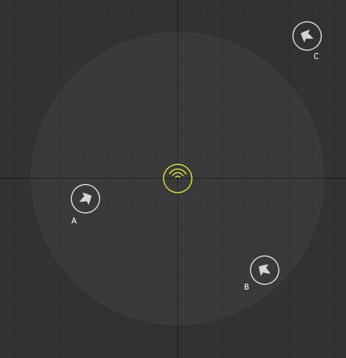
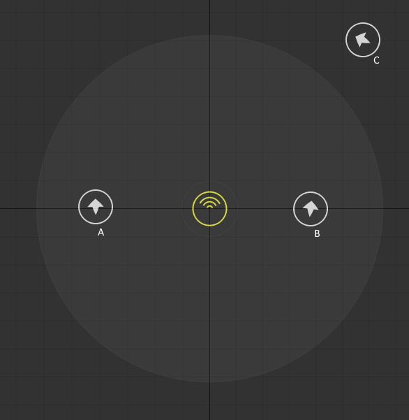
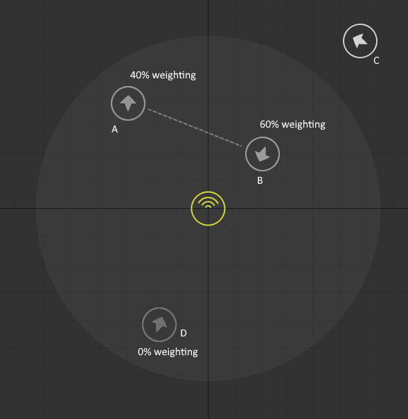

FMOD API User Manual 2.01
This section will introduce you to using 3D sound with FMOD Studio events.
FMOD Studio shares the same coordinate system as the core API. See the 3D Sounds white paper for details.
The programmer needs to call Studio::System::setListenerAttributes once per frame for the listener, and to update 3D events with Studio::EventInstance::set3DAttributes. It is important to update all orientations before calling Studio::System::update. If some orientations are set before Studio::System::update and some are set afterwards, then some frames may end up having old positions relative to others. This is particularly important when both the listener and the events are moving fast and together - if there a frame where the listener moves but the event does not it becomes very noticeable.
FMOD Studio supports panning events with the FMOD Studio panner on the master track. If there is no panner, the event is considered 2D and the orientation has no effect on the event. It is possible to use other sorts of panners by replacing the FMOD Studio panner with a different type, for example a third party panner.
The Object panner is a special type of panner that interfaces with Object based output modes such as Dolby Atmos. These output modes accept mono signals with a 3D position and do their own panning and mixing to the final speaker configuration. To use Object panners, the programmer has to specify an output mode that supports Object based panning otherwise the signal will be mixed down at the final stage by FMOD.
The benefit of the Object panner is that it allows the sound designer to leverage Object based technologies. However it does come at a cost, since the signal leaves the mix at the Object panner and does NOT receive DSP effects on the parent buses like normal panners do. The Object panner automatically bases its volume on the combined volumes of parant buses for basic mixing, but no complex effects can be used. For this reason the mix has to be set up very carefully with knowledge of the limitations of the Object panning.
It is possible for the sound designer to use a mixture of normal 3D panned events and Object panned 3D events. Normal events will have signal going through the mixer hierarchy, and Object based events will have signal that leaves the mix at the master track. As far as the programming API goes, both sorts of events are treated exactly the same.
FMOD Studio supports setting automations based on parameters that automatically update based on position. For example, the sound designer could add a volume automation based on Distance, with a 2D panning that is automated on the Direction parameter. The event is still considered 3D in that case, even if it has no panner on the master track.
An event may have both a 3D panner on the master track, as well as an automation based on a Distance parameter. As the event and listener moves, both the panner and the automation will be updated.
FMOD Studio supports multiple listeners. Call Studio::System::setNumListeners to set the number of listeners, and use Studio::System::setListenerAttributes to set the orientations for listeners, with an index for the listener.
Consider the case of an event with three nearby listeners. In this case, listener A is slightly closer to the event than B, and C is the furthest away, outside the max distance of the event.
The Studio 3D panner will take listener A and B into account. The gain will be based off the closest listener distance (in this case, the distance to listener A). Listener B will have an effect on the panning. However, both A and B agree that the event is to the front, so the final pan matrix will be towards the front speakers. Listener C has no effect on the calculation since it is out of range.

Consider this case where listener A and B have moved and now the event is to the right of A and to the left of B. In this case, the gain will be based of the closest listener distance (which is B), but the pan matrix will have signal out of both the left and the right since both listeners have an effect on the mix. If A moved further away then the contribution of A would diminish and to the signal would start to come more out of the left speakers. If A moved further enough away, the signal would smoothly interpolate to just B having an influence on the panning.

A new feature of 1.09 is the ability to set listener weights using Studio::System::setListenerWeight. This allows listeners to fade in and out of existence, as well as to allow cross-fading of listeners to a new position. In the following picture, we have 4 listeners. Listener C is out of range so it has no influence, and listener D has 0% weighting so it has no influence either. The remaining two listeners have a weight of 40% and 60%. In this example, perhaps the camera is teleporting to a new position and the game is smoothly interpolating to a new orientation.
The gain is a weighted average between A and B, so it is equivalent to having a distance somewhere between the two listeners. The panning of the signal is a mixture of A and B. A is further away and has a lower weight, so the biggest contribution is due to B, meaning the signal sounds mostly in the front speakers. If you imagine panning from A to B, the signal will smoothly interpolate from the back speakers to the front and get louder when the weights scale from A to B.

Events can have a mask that specifies which listeners are active for that event. By default all listeners apply to all events. By calling Studio::EventInstance::setListenerMask, some listeners can be disabled for that event so that they have no influence on the panning. This could be used to group some events and listeners together and have that set only affected by that one listener. When performing the calculation above, any listener not included in the mask is ignored and is as if it does not exist for that event. It is an error to set a combination of mask and weight such that no listener is active for an event.
FMOD events support doppler. The sound designer specifies doppler on a per event basis with a scale, so some events may be affected less than others. It is up to the programmer to correctly specify the listener and event velocity. The scale of doppler can be specified at initialization time using System::set3DSettings.
For the case of multiple listeners, the doppler is based on the closest listener. If listener has a weight then it is a combination of the closest listeners up to 100%. For example if there were three listeners at increasing distance with weight of 60%, 60% and 60%, then the doppler would be calculated from 60% of the first listener, 40% of the second, and 0% of the third.
For the case of multiple listeners, the FMOD Studio automatic parameters are based on the closest listener. If listener has a weight then it is a combination of the closest listeners up to 100%. For example if there were three listeners at increasing distance with weight of 60%, 60% and 60%, then the automatic parameters would be calculated from 60% of the first listener, 40% of the second, and 0% of the third.
When calling Studio::System::setNumListeners and Studio::System::setListenerAttributes, there is no need to call the equivalent Core functions System::set3DNumListeners and System::set3DListenerAttributes. FMOD Studio will pass the information into the Core API automatically. That means it is possible to have a mixture of FMOD Studio 3D Events and Core 3D Channels playing at the same time.